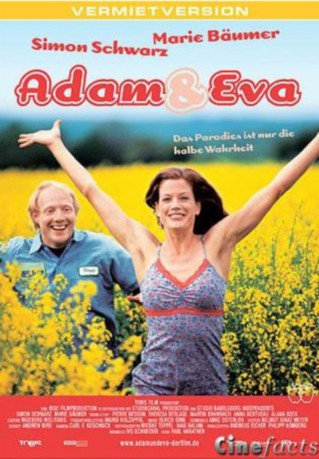

#11716 Adam & Eva
 
 IMDB-Wertung: 6.3 / 10
IMDB-Wertung: 6.3 / 10  Metascore: 0
Metascore: 0 
Am Anfang war das Feuer: Adam und Eva entbrannten füreinander, als er sie aus einem lodernden Haus rettete. Jetzt sind sie vier Jahre verheiratet, und aus dem brennenden Verlangen nacheinander ist ein lauwarmes Miteinander geworden. Das Traumpaar genügt sich nicht mehr: Eva möchte am liebsten ein Kind; nach Adams Auffassung aber haben quengelige Gören im Paradies seit jeher nichts verloren und bei der Vorstellung an Alete und trautes Familienglück im gemütlichen Eigenheim kommen ihm eher Fluchtgedanken – kurz gesagt: das Paradies ist in Gefahr!
Jahr: 2003
Dauer: 94 Minuten
FSK: 12
Land: Österreich Studio: TOBIS FilmTonspuren:
Untertitel:
Auflösung: SD (576x304) Größe: 696 MB
Genre: Komödie, Liebe
Regisseur: Paul Harather
Drehbuch: Manfred Beger, Måns Herngren, Hannes Holm, Saskia Kuipers, Ivo Schneider
Soundtrack: Ulrich Sinn
Darsteller:
 Simon Schwarz als Adam
Simon Schwarz als Adam Marie Bäumer als Eva
Marie Bäumer als Eva- Theresa Berlage als Charly
- Anna Bertheau als Betty
 Martin Brambach als Erik
Martin Brambach als Erik Harald Burmeister als Vater I
Harald Burmeister als Vater I Peter Jordan als Vater II
Peter Jordan als Vater II- Bernd Moss als Makler
- Rachel Braunschweig als (uncredited)
 David Kross als Adams Sohn (uncredited)
David Kross als Adams Sohn (uncredited) Ralph Misske als Vermieter (uncredited)
Ralph Misske als Vermieter (uncredited)- Pierre Besson als Olli
- Alana Bock als Karin
- Hans-Peter Korff als Evas Vater
- Christian Glockzin als Johannes
- Victoria Trauttmansdorff als Ärztin
- Jessica Kosmalla als Pastorin
- Wolf-Dietrich Sprenger als Richter
- Nina Tenge als Odile
- Leo Mosley als Nicky
- Kira Koschella als
- Susi Banzhaf als (uncredited)
- Ines Baric als (uncredited)
- Ingrit Dohse als Tante Meike (uncredited)
- Andreas Eckel als (uncredited)
- Suntje Freier als Suntje (uncredited)
- Kurt Glockzin als Sebastian (uncredited)
- Ruby Kossin als (uncredited)
- Philipp Netzlaff als Hendrik (uncredited)
Datei: X:\NEU\Adam & Eva (2003, FSK12, 576x304).avi seit 14.09.2019
 Es gibt insgesamt 187 Filme in der Gruppe 'NEU'
Es gibt insgesamt 187 Filme in der Gruppe 'NEU'